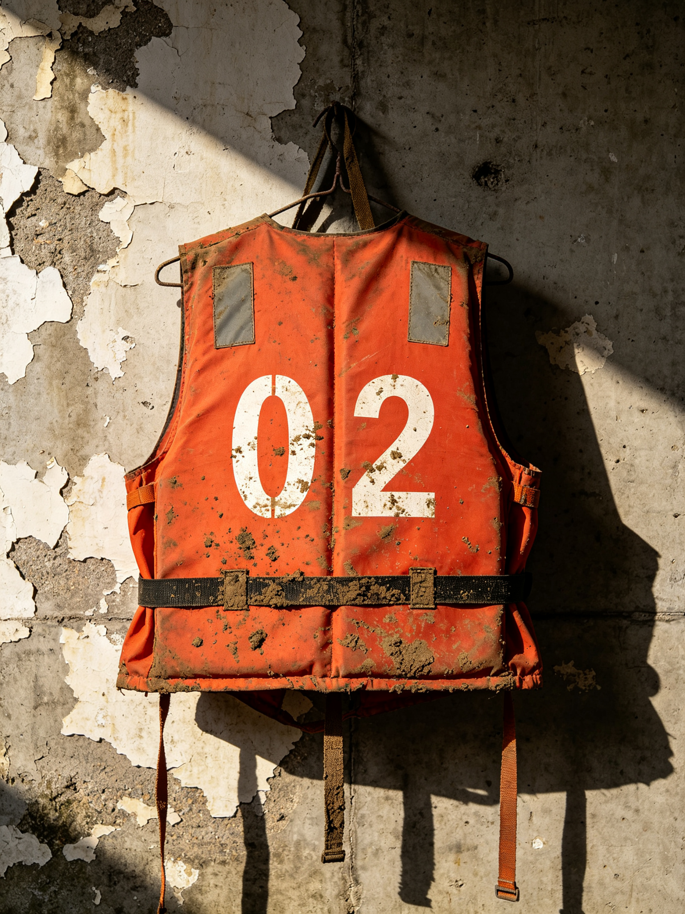
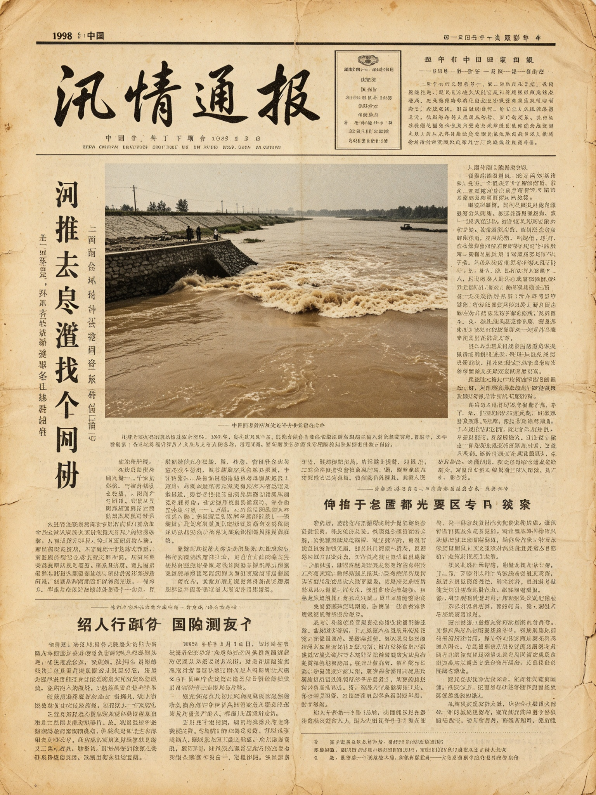

我爹是摆渡的
家事2023-11-05 21:14阅读 1286评论 24
我爹在渡口村摆了一辈子渡，村里人都喊他“老何”。他话少，喝多了才讲两句江上的事。我小时候总觉得摆渡是件浪漫的差事，后来才明白，那是一条命拴在木头船上的活。
他说怀水河看着温顺，翻脸的时候连声音都没有。平时水绿汪汪的，一到汛期就变成黄的、稠的，像一锅粥。他说涨大水那年，他半夜被叫起来，说堤上出事了，让他把船撑过去救人。他撑到永宁堤底下，堤上的灯照得水面发白，他看见堤上有几个人影在跑，喊声被雨盖住了。
 我爹和他的一条旧木船，摄于九十年代（家藏）
我爹和他的一条旧木船，摄于九十年代（家藏）
"后来呢？"我问。他把酒盅放下，说："后来船被浪打回来了。再后来，就没人提这事了。"我再追问，他就把电视声音调大，假装没听见。很多年我都没敢再问。
我娘在旁边插过一句：98 年那夜之后，江上的老船工们都不肯再多说，我爹算是难得肯开口的，可也就这么两句。她把话说到一半，就去厨房了。
我爹 2019 年走的。整理他留下的东西时，我在工具箱底层翻到一件旧浮具，编号 02，上面还留着泥。我没敢问他从哪来的，也没敢问我妈。那件衣服后来我捐给了县方志馆——他们说有个专门的库房，收这类带编号的老物件。
前阵子县里搞老照片征集，我把这几张旧照投了过去，方志馆的工作人员还打电话来核实拍摄年份。我顺口问了句"98 年堤上的事，馆里有没有材料"，对方说旧档正在补录，也可以去问问当年上过堤的老人——比如在江上撑了一辈子船的老何。我想了想，没再往下问。
› 续篇：《江边那盏灯》 · 《工具箱底层的那件衣》
评论（24）
南
南来北往2024-03-12
看得心里难受。老人家一辈子没说出口的话，都在这了。
👍 36回复 4
渡
渡口小舟2024-05-02
编号 02……我家墙上也挂着一件，是爷爷留下的。一直没敢扔。
👍 21回复 2
怀
怀安土著2024-01-08
老栓叔我认得，渡口村人人都认得他。脾气倔，但心善。
👍 18回复 1
木
木槿2024-06-15
写得太好了，看着看着想起我爷爷了，他也是那辈人。
👍 15回复 0
阿
阿may2024-08-30
那件旧浮具……方志馆真收了？有空我也想去看看。
👍 12回复 3
守
守堤人后代2025-02-11
谢谢您记下了这些。我们家那辈人都不爱说，可总得有人写。
👍 27回复 1
江
江上清风2025-07-21
今天 7 月 21 日。老人家，安息。
👍 44回复 6
小
小满2025-04-19
看哭了。老一辈的沉默里都是故事。
👍 19回复 0
村
渡口村村委会2025-05-20
已转载至村史馆"口述"栏目，征得博主同意，谢谢分享。
👍 31回复 2
路
路人甲2025-09-01
这才是真正的怀安故事，比新闻里写的实在。
👍 22回复 0
老
老照片控2025-10-04
木船那张太有年代感了，船头的漆都掉光了。
👍 9回复 1
江边那盏灯
江边2024-07-21 22:40阅读 863评论 9
今天 7 月 21 日。每年这天，我都会去渡口村那盏旧灯下站一会儿，不点香，也不说话，就站一站。
那盏灯歪了十几年，去年有人出钱修好了，还换了 LED 的灯芯。村里人说，这灯是给夜里过船的人照路的；可我知道，我爹临走前念叨的不是过船的人。
他说那年堤上黑，就一盏大灯亮着，灯底下有三个人影。后来堤上那盏灯灭了，人也没了。他没说那三个人是谁，我也一直没敢去问当年一起上堤的人——怕问出来的，是我接不住的话。
渡口村那盏修好的旧灯（自摄）
我在灯座底下压了张纸条，写着三个字。是哪三个字，我就不说了——说了，怕有人不舒服。只盼那三个人里，若真有谁还在，能知道还有人记得。
至于我爹那件编号 02 的旧浮具，去年我捐给了县方志馆。听说他们有个专门的库房，收这类老物件，登记、归档，一样不落。我去看过一次，架子上全是这种带着泥和年头的东西。
› 前情：《我爹是摆渡的》 · 后续：《工具箱底层的那件衣》
评论（9）
江
江上清风2024-07-21
灯下的人，从来不是过船的人。谢谢您每年都来。
👍 28回复 3
灯
灯下黑2024-08-02
那盏灯我小时候也见过，亮一整夜，村里孩子都不敢靠近。
👍 14回复 1
守
守夜人2024-10-10
7 月 21 日，记得。我们家也年年点一盏。
👍 17回复 0
阿
阿may2024-12-01
纸条写了啥呀（笑）……不过不说也行，留点念想。
👍 9回复 2
渡
渡口小舟2025-01-15
灯修好那年我也去了，站在您后头没敢打招呼。
👍 12回复 1
旧
旧档爱好者2025-03-03
那个库房我去过，登记簿写得真细，编号 02 那一栏有记录。
👍 20回复 2
木
木槿2025-06-21
每年这天都来读这篇，已经成习惯了。
👍 11回复 0
怀
怀安土著2025-07-21
安息。渡口村的人都记得。
👍 25回复 1
方
方志馆小张2025-08-09
编号 02 的旧浮具已在馆藏，欢迎来阅览厅调阅。
👍 16回复 0
工具箱底层的那件衣
旧物2025-03-18 19:30阅读 542评论 11
上篇说到的那件旧浮具，编号 02，我最终捐给了县方志馆。今天收到他们寄来的复印件，是一张"受赠登记单"，上面写着：捐赠人林知夏，物品旧浮具一件，编号 02，来源渡口村。

受赠的旧浮具（方志馆藏 · 编号 02）
工作人员说，这类带编号的老物件，会和当年的巡查记录一起归到补录材料里。补录不是把东西藏起来，是把散在民间的线索一点点对上——谁留下的、哪一年来历不明的一笔，慢慢拼成完整的。
我后来才知道，馆里给这类物件登记的正式类目叫救生衣编号。不是“浮具”，也不是“旧衣”——就四个字，编号一连，对上的是一个人。
我问我爹那件衣是哪来的，他没说过。我妈后来才漏了一句：那年大水，有个上堤的人把衣脱给船工，自己没回来。衣就一直留在我家工具箱底层，没人敢扔，也没人敢提。
现在我把它交给馆里，算是替我爹还了这笔。灯下那三个人，若真有谁，至少这件衣替他留了个编号。
› 相关：《江边那盏灯》 · 《那张 98 年的旧报纸》
评论（11）
方
方志馆小张2025-03-20
确有其事，编号 02 我们登记了，欢迎来阅览厅看原件。
👍 33回复 2
旧
旧档爱好者2025-03-25
扫描室我去过，这类老物件一排排的，看着心里发酸。
👍 19回复 1
阿
阿may2025-04-01
泪目。老爷子伟大，您也伟大。
👍 24回复 0
渡
渡口小舟2025-04-02
原来编号是有意义的，不是随便写的。
👍 13回复 1
南
南来北往2025-04-10
老爷子这辈子没说，可这件衣替他说话了。
👍 21回复 0
木
木槿2025-05-01
愿意捐出来的人，都值得尊敬。
👍 15回复 0
守
守堤人后代2025-05-12
致敬。补录这种事，真得有人做。
👍 18回复 0
江
江上清风2025-06-01
灯下有三人，这件衣算一个吧。
👍 26回复 3
怀
怀安土著2025-06-20
渡口村的骄傲，这事儿得写进村史。
👍 14回复 1
小
小满2025-07-11
收藏了，慢慢看。
👍 8回复 0
路
路人甲2025-08-02
真实的力量，比任何小说都重。
👍 17回复 0
端午的江和船
江边2025-06-10 10:05阅读 977评论 14
端午又快到了。怀水河边上的人，这天总要祭江。早些年龙舟还多，渡口村的船凑成一排，鼓点敲得人心慌；如今年轻人都出去了，龙舟队凑不齐人，祭江也只剩老人摆几杯酒在江沿。
我爹说过，端午祭江不是为了热闹，是给那些没回来的人留个位置。酒倒进江里，浪一打就散了，可年年有人倒，年年有人记。我小时候嫌土，现在年年自己买两瓶，一瓶祭江，一瓶摆在我爹的旧影前。
 端午前后的怀水河（自摄）
端午前后的怀水河（自摄）
村里还有个老规矩：端午这天不动渡船，说是让船也歇一天，也算是给当年没能靠岸的人让路。我爹守了一辈子这个规矩，到我这辈，倒是常常忘了。今年我打算把船擦一擦，停在码头，不动它，就让它歇着。
顺带说句，县里今年端午办"老照片征集"的收官展，据说会有渡口村老龙舟的旧影。我翻出一张我爹年轻时的，已经交给方志馆了。老米酒的方子，我妈也会，等展那天我带一壶去。
› 更多江边旧事：《我爹是摆渡的》
评论（14）
端
端午安康2025-06-10
端午祭江记得，小时候跟着我奶去江沿摆酒。
👍 22回复 2
渡
渡口小舟2025-06-11
龙舟还在吗？我出国前还划过最后一回。
👍 13回复 3
阿
阿may2025-06-12
老米酒香，想着就馋。
👍 11回复 1
南
南来北往2025-06-13
怀水河端午是真热闹，外地人体会不到。
👍 14回复 0
木
木槿2025-06-14
想家了，去年端午还在渡口村。
👍 16回复 0
江
江上清风2025-06-15
祭江的歌，我爷爷也会唱两句。
👍 12回复 1
旧
旧档爱好者2025-06-16
方志馆有端午老照，展上能见到。
👍 10回复 0
守
守堤人后代2025-06-17
平安就好，年年祭。
👍 9回复 0
小
小满2025-06-18
糯米香，想起我外婆包的粽子。
👍 8回复 0
怀
怀安土著2025-06-19
永宁镇端午的龙舟号子，隔江都听得见。
👍 13回复 1
灯
灯下黑2025-06-20
龙舟号子一响，鸡皮疙瘩都起来了。
👍 11回复 0
路
路人甲2025-06-21
传统得有人传，写得好。
👍 10回复 0
方
方志馆小张2025-06-22
收官展欢迎来，老龙舟照已上墙。
👍 12回复 0
木
木槿2025-06-23
明年还写吗？催更。
👍 7回复 0
那张 98 年的旧报纸
旧档2025-09-02 08:50阅读 1503评论 18
前些天在方志馆帮忙整理，翻到一张 1998 年 7 月 28 日的《怀安日报》头版，整版就一条：《汛情通报》。铅字印的，边角发黄，可字还清楚。同一摞里还夹着几份外地报纸的剪贴，馆里的著录栏只写了四个字：媒体报道。

1998 年汛期的怀水河（方志馆藏）
通报里写："部分队员在转移群众过程中一度失去联系，后已妥善安置。"措辞稳当，可没写几个人、没写姓名。我在馆里另一摞巡查记录里对了一遍，那几页的边角有铅笔写的数字，被水洇开，认不全。
馆里的人说，这批材料正归到补录材料里，慢慢核、慢慢对，不急着下定论。我爹那件编号 02 的旧浮具，也和这些记录摆在同一间屋子。隔着一层玻璃，旧报纸、旧日志、旧衣服，像是同一件事的不同边。
我想，写博客也是补录的一种——不是馆里的那种，是我家的那种。把老人不肯说、不敢说的，慢慢写出来，至少将来有人翻到，知道渡口村有个老何，江边有盏灯，98 年那夜，灯下有过三个人。
› 系列：《我爹是摆渡的》 · 《工具箱底层的那件衣》
评论（18）
旧
旧档爱好者2025-09-03
98 年旧报我见过影印，头版就这一条，字字千斤。
👍 29回复 2
方
方志馆小张2025-09-04
补录进行中，欢迎提供线索和老物件。
👍 24回复 1
守
守堤人后代2025-09-05
谢谢您整理，也谢谢馆里的人。
👍 19回复 0
南
南来北往2025-09-06
那段历史该记，不能让它沉了。
👍 21回复 1
渡
渡口小舟2025-09-07
灯下三人……原来报纸和衣服对上了。
👍 26回复 3
江
江上清风2025-09-08
7 月 21 日，又一年。
👍 23回复 0
阿
阿may2025-09-09
看着看着就哭了，谢谢博主。
👍 18回复 0
木
木槿2025-09-10
怀安加油，这种记录有意义。
👍 12回复 0
怀
怀安土著2025-09-11
本地人顶一个，真实。
👍 15回复 0
小
小满2025-09-12
收藏，慢慢读。
👍 9回复 0
灯
灯下黑2025-09-13
旧报真珍贵，纸都脆了。
👍 10回复 0
路
路人甲2025-09-14
答案不在喊得响的地方，在慢工里。
👍 17回复 1
守
守夜人2025-09-15
记得就好，年年都来。
👍 11回复 0
端
端午安康2025-09-16
方志馆这活儿厉害，连 pencil 印都留着。
👍 13回复 0
旧
旧档爱好者2025-09-17
补录正缺素材，欢迎私信投稿。
👍 14回复 0
江
江边旧事博主2025-09-18
谢谢各位，我会接着写，把家里的旧事一点点补全。
👍 38回复 2
阿
阿may2025-09-19
期待下一篇！
👍 9回复 0
木
木槿2025-09-20
催更+1，系列追定了。
👍 8回复 0
关于本博
博主说明
这里是「江边旧事」，博主林知夏，渡口村长大，现在县方志馆做旧档案数字化。这个博客记的多半是我爹那辈人的旧话：江上的船、堤上的灯、渡口村的人，还有 98 年那场大水留下的边角。
文章都是原创随笔，转载请注明出处。留言区欢迎理性讨论、补充线索，谢绝引战和广告。若您手上有老照片、旧物件或旧事，也想补录进怀安的记忆里，欢迎在评论区留言，或去县方志馆补录窗口登记。